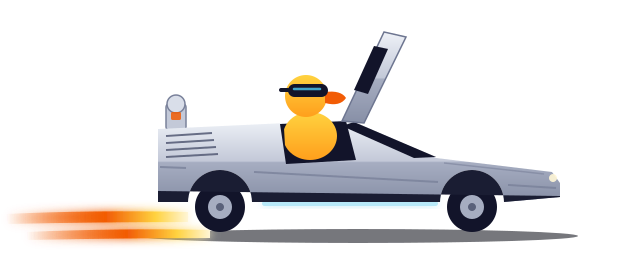
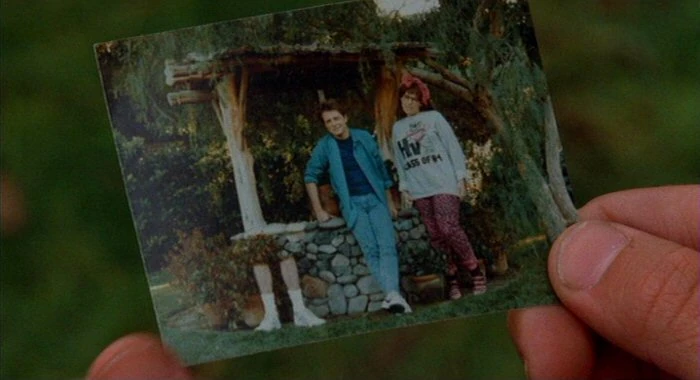
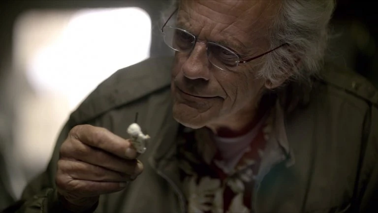
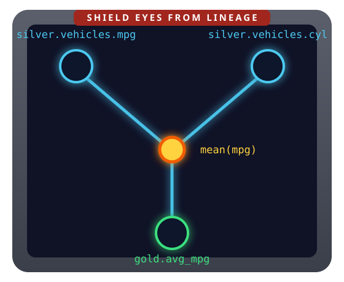
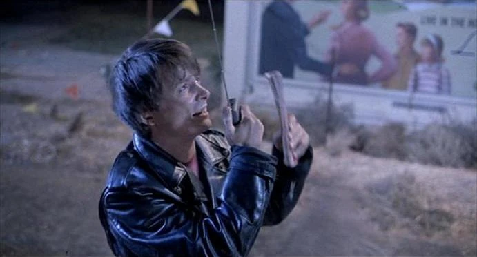

library(ducklake)
attach_ducklake("quack_lake", lake_path = "data/lake", author = "doc")
Quack to the Future
Building traceable data lakehouses with DuckLake in R, on a laptop

“Why did this number change?” You have no idea. Somewhere in the past, the timeline skewed.
For code, versioning is a reflex:
git blameFor data, we do our best:
_v2 suffixesTwo lines of R to a lake where every write is an authored commit.

The catch: built for Spark clusters, run by platform teams.
You don’t need 1.21 gigawatts for this.
A lakehouse that fits in a folder:
DuckDB, the analytical database that already lives inside your R session, does the work. {ducklake} puts dplyr on top.
data/lake/
├── quack_lake.ducklake # catalog
├── bronze/vehicles/*.parquet
├── silver/vehicles/*.parquet
└── gold/efficiency_by_cyl/*.parquet
One call opens a lake, and creates it first when nothing is at the path yet.
That’s a working data lake in a folder. Every write from here is transactional and versioned.
Each layer is a schema: a named group of tables inside the lake. On disk, it’s a folder.
Keep raw data sacred, refine in stages, analyze from gold. Each hop is one versioned, documented transaction.
Created schema "bronze".
Created schema "silver".
Created schema "gold".
Committed snapshot 1 (marty): Create medallion layersEverything inside with_transaction() lands as one snapshot. If any step fails, nothing lands.
Committed snapshot 2 (marty): Load raw vehicle dataEvery commit carries an author and a message, and the confirmation names the snapshot.
Committed snapshot 3 (doc): Clean and standardize vehiclesCommitted snapshot 4 (doc): Gold: efficiency by cylinder countget_ducklake_table() returns a lazy table. create_table() runs the query inside DuckDB and writes the result into the lake: the rows never pass through R.
snapshot_id author commit_message
1 0 doc Create lake
2 1 marty Create medallion layers
3 2 marty Load raw vehicle data
4 3 doc Clean and standardize vehicles
5 4 doc Gold: efficiency by cylinder countSix months from now, “why did this change?” has an answer you can query.
The lake remembers everything: query the past, see exactly what changed, undo mistakes.
Committed snapshot 5 (biff): small tweak32 rows → 18 rows, labeled “small tweak.”
# A tibble: 14 × 3
change_type model mpg
<chr> <chr> <dbl>
1 delete Mazda RX4 21
2 delete Mazda RX4 Wag 21
3 delete Datsun 710 22.8
4 delete Hornet 4 Drive 21.4
5 delete Merc 240D 24.4
6 delete Merc 230 22.8
7 delete Fiat 128 32.4
8 delete Honda Civic 30.4
9 delete Toyota Corolla 33.9
10 delete Toyota Corona 21.5
# ℹ 4 more rowsAll 14 deleted rows, with the values they had before Biff touched them.
# A tibble: 1 × 1
n
<dbl>
1 32Committed snapshot 6 (doc): Restored silver.vehicles to snapshot 3 snapshot_id author commit_message
1 3 doc Clean and standardize vehicles
2 5 biff small tweak
3 6 doc Restored silver.vehicles to snapshot 3Snapshot 3 never went anywhere. Restore rolls forward as a new snapshot: Biff’s mistake stays in the log.
You fix the timeline without erasing anyone from the photo.

{dplyneage}: column-level lineage for dplyr pipelines
Every column in a result, traced back to the source columns it came from.
{dplyneage} walks the query tree dbplyr already built.
[1] "gold.efficiency_by_cyl.avg_mpg" "silver.vehicles.mpg" Impact analysis as a function call: know what a change touches before you make it.

| question | answer | |
|---|---|---|
| {ducklake} | when / who / why did tables change? | every write is an authored, versioned commit |
| {dplyneage} | where did each column come from? | exact lineage from your dplyr code |
Take one pipeline you own. Put its tables in a lake, with authored commits.